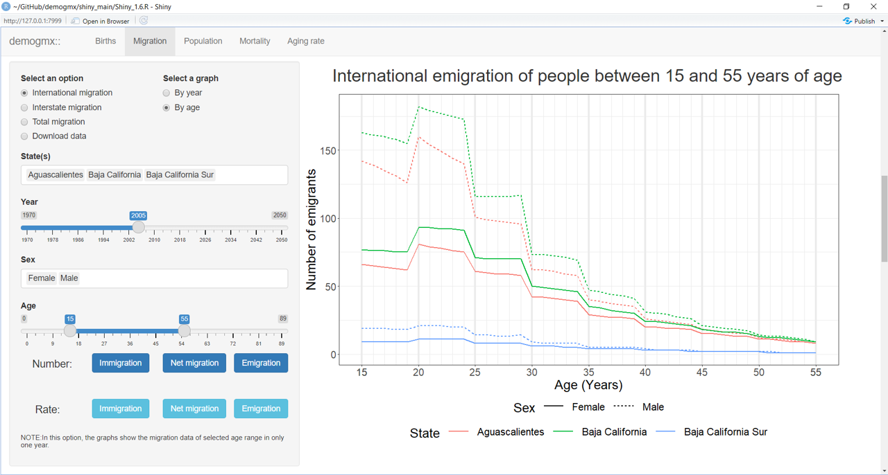

Welcome!
This vignette is intended to give a brief and consistent guide to use the shiny app embedded in the demogmx package. This app was created to give a friendly approach to the information present in this package through two general ways: visualizations and access to information.
In relation to the visualizations, this app permits the user to filter the data based on parameters like the state, the year, and the sex. Once this selections have been made, the app can make different visualizations by simply clicking on the blue buttons.
Regarding the access of the data, a copy of the package data-sets can be obtained in .csv format. To do that, first the parameter set must be defined and then the data will start to download by clicking the Download data button.
Structure of the app
Once the shiny app is in execution it will appear as a new window or tab in your browser. This app has three main areas:
The tabset panel - shows the main divisions between the types of demographic information available in the package. The births, migration, population, mortality and aging tabs are available. By selecting a new tab the shiny app will show a new page with specific filters and options, related to the selected type of demographic data, will appear. This panel is shown in the next figure as the area contained in the red rectangle
The sidebar panel - gives different options and filters that the user must to define in order to obtain specific visualizations and data-sets. It is placed at the left side of the window. Each tab has a different sidebar panel because the options and the filters of each type of demographic information will have unique characteristics. This panel can be seen in the next figure as the area contained in the green rectangle.
The main panel - contains the area with the greater extent and it is used to visualize the created graphs, based on the user specifications. This part can be scrolled down in order to see the different visualizations that are available in each tab. The main panel is the area contained in the blue rectangle, in the following figure.
Now we will focus in the characteristics and options that each tab has to offer.
Births tab
This tab provides birth visualizations and data. To get them the user has to define the following parameters (the numbers in parentheses refer to those in the image at the end of this section):
Select the states (1). This option allows the user to select the states that will be included in the graphs and/or in the downloadable data-sets. It is important to note that the magnitudes of each state’s births can alter the visualization of certain graphs.
Select years (2). Here the range of years included in the graphs and in the data is defined. Do not forget to read the notes at the bottom of the sidebar panel. If Female or Male are selected in the sex option, the available years will be reduced from 1985 to 2020 because a different data-set will be used.
Select Sex (3). In this part, the sex contained in the graphs and in the downloadable data-set is defined. As we were saying, there are three possible options to select: Female, Male or Total. If the latter is selected the graphs will show the aggregated data of both sexes.
Once the user has defined the previous parameters, three different types of graphs can be created:
- The number of births (4)
- The birth rate (5)
- The sex proportion of the births (6)
In all of them the X-axis represent the year of the data and, to ease the visualization, the vertical thicker gray lines are placed in the years that are multiples of five. Also, in all the graphs, each state has a unique color and each sex a unique type of line. To obtain the graphs, it is only necessary to click in the corresponding button.
In addition, a births data-set can be downloaded by clicking the Download data button (7). The data will be filtered based on the specifications made by the user in the sidebar panel options. The format of the downloadable file is .zip and within it there are two .csv files, one based on the information of Mexico’s National Council of Population (CONAPO, by it’s acronym in Spanish) and the other containing the information provided by the National Institute of Statistical and Geographical data (INEGI, by it’s acronym in Spanish).
For more information on the information sources please check the Get demographic data vignette.
Migration tab
This tab has two initial sets of options. In the first, the user has to decide which one of the three types of migration available is going to use in the graphs or if the user is not interested in graphing and wants to get the data instead, Download data is a fourth option.
International, Interstate and Total migration
The three types of migration are International migration, the Interstate migration and the Total migration, respectively. The Total migration is the aggregate of the other two. Note that if National is chosenin the State(s) option and Interstate migration is also selected, the graphs will be in blank because at a country level there is only international migration.
By year or by age?
Once the user have defined the type of migration, there is an additional set of two options that give the possibility to generate visualizations that show the data across multiple years (by year) or to generate them showing the migration characteristics by age based in the migration that occurred in a single year (by age).
In both cases the state(s) and the sex(es) shown in the visualization can be defined by the user. If By year is selected the date option will be a year range, otherwise, if By age is chosen,the date option will become a single year and an age option will appear, in it option the user must define the age range of the migration population included in the graphs.
No matter the type of graph you choose (by year or by age) the available set of graphs will be the same. The main difference will be the X-axis of the graphs. If By year is chosen, it will show the selected years, if you choose By age, it will show the specified age range.
Here are two examples of how the data can be seen:
The graph number of emigrants selecting the option By year will show the emigration of each state, across the years.
The graph number of emigrants selecting the option By age will show the emigration of each state in one year disaggregating the information by ages in the X-axis.

Download data
The fourth alternative in the first set of options allows the user to download the specified migration data. However, in this option all the types of migration, states, years, sexes and ages of the migration data, contained in the demogmx package, can be selected.
Once the desired migration characteristics have been defined then the data can be downloaded by clicking the Download data button at the bottom of the side bar panel of the Migration tab. The data will be downloaded in a .csv file.
Population tab
This tab provides graphs and data concerning the population registered in Mexico. It has a initial sets of options. The first two define which type of graphs will be generated in the app and the last one allows to download the population data with all the possible options available in the data.
First, we will talk about the first two alternatives to make visualizations.
One year or range of years?
This two options allows the user to generate visualizations that show the data contained in one single year (one year graphs) or the data across multiple years (year range graphs).
In both cases the state(s) and the sex(es) can be defined by the user in the same way. If one year graphs is chosen the year selection will be made with a simple slider and the age ranges option will be available. If year range graphs is selected, then the user will define the minimum and maximum value of the years that will be used in the graphs in the year range option.
Two types of visualizations can be generated in both options (one year and range year graphs). These graphs will show the size of the population and the sex proportion. However, the way that this information is presented is different. If the data is defined to one year, the X-axis of the graphs will represent the selected ages of the population. Instead, if the data includes multiple years, the X-axis will represent the defined range of years.
There’s a graph that is only available in the one year graphs option: the population pyramid. To generate this graph a set of states and a the age range that will be included in the graph must be defined. In the following figure we can see an example of this visualization.

Here is an example of how the population graph is generated if the year range option is selected. We can see that each color represents a particular state and that each type of line is related to a specific sex.
Download data
The last alternative in the first set of options allows the user to download the specified population data. However, in this option all the population data parameters (states, year ranges, sexes and age ranges) can be selected.
Once the population characteristics have been defined then the data can be downloaded by clicking the Download data button at the bottom of the side bar panel. The data will be downloaded in a .csv file.
Mortality tab
This tab provides graphs and data concerning the registered deaths in Mexico. As we can see in the app, and in the next two figures, it shares the initial structure of the population tab. It has a initial sets of options, where the first two are used to generate graphs based in one year or in multiple years data and where the third option permits to download mortality data based on the user specifications.
One year or range of years?
As in the population tab, in both cases the state(s) and the sex(es) can be defined by the user in the same way. If one year graphs is chosen the year selection will be made with a simple slider and the age ranges option will be available. If year range graphs is selected, the user will define the minimum and maximum value of the years that will be used in the graphs in the year range option.
Two types of visualizations can be generated in both options (one year and range year graphs). These graphs will show the number of deaths and the death proportion by sex. However, the way that this information is presented is different. If the data is defined to one year, the X-axis will represent the ages of the population. If the data includes multiple years, then, the X-axis will represent the years defined by the user.
There’s a graph that is only available in the one year graphs option: the mortality rate by age. To generate this graph all the parameters in the side bar panel must be defined. In the following figure we can see an example of this visualization.
In the previous graph we can see that the colors represent the states and the types of lines are related to a specific sex.
In addition, an example of how a mortality graph is generated if the year range option is selected is shown in the next figure.
Download data
The last alternative in the first set of options allows the user to download the specified mortality data. However, in this option all the mortality data parameters (states, year ranges, sexes and age ranges) can be selected.
Once the mortality characteristics have been defined then the data can be downloaded by clicking the Download data button at the bottom of the side bar panel. The data will be downloaded in a .csv file.
Aging rate tab
This tab provides visualizations and data on the aging population. To get them it is necessary to define the states (1), years (2), sexes (3) and the age range (4) of the desired population. In this tab, the available years to select range from 1985 to 2020 and the possible range of ages goes from 0 to 89 years old. The bold numbers inside the parentheses refer to the numbers in the figure at the end of the section of this tab.
Once the user has defined the parameters, two graphs can be created:
- Get aging population by age (5)
- Get aging rate by age (6)
In those graphs the X-axis represent the age of the population and, as in previous graphs, each state is represented by a unique color and each sex by a specific type of line.
Once the parameter set is defined, the data user can be downloaded by clicking the Download data button (7). The format of the downloaded file is .csv.